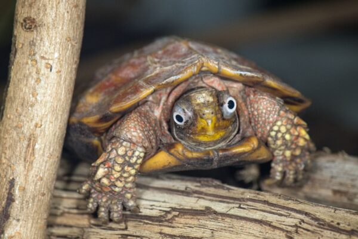

Reproduction
They are a sexually dimorphic species. Their eggs take a little more than two months to hatch and only lay clutches of 1 to 2 eggs at a time. When courting mates are frequently found together or the male will chase the female until they can copulate.
Conservation
According to their status listed on the IUCN Red List, this is an endangered species. These turtles do not have an evaluated population status.

Behavior
Not much happens in these turtles day to day lives. They typically move very little on a day to day basis unless there is a reason to do so. They sit still for hours on end with their head held high and eyes wide open. When staying still, their eyes move independently, scanning the surrounding area. Despite how slow and sluggish they act throughout the day, their pupils react quite fast. When food is presented to them,both eyes fixate on the food even if one of their eyes is being blocked from view of the target.

Habitat
Native to Southern and Northern Vietnam

Population Status: Not Evaluated Other Names: Spengler's Turtle, Black-Breasted Hill Turtle, Vietnamese Leaf Turtle Habitat: Average Size: 4in-5in in length 90g-150g in weight
Lifespan: 20 to 24 years Diet: Snails, leaves, fruits, and insects Clutch Size: 1 to 2 eggs per clutch.